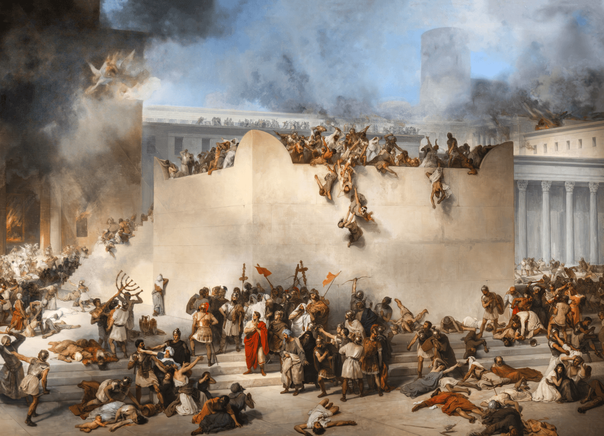

The Roman Conquest of Jerusalem
(70 CE) in Medieval Latin Texts
between c.400 and c.1300:
An Open-Access Database with c.2500 Entries 🚧 Currently under construction.🚧
Alexander Marx
(Institute for Medieval Research, Austrin Academy of Sciences)

The database is under construction.
Please check back later for updates. Estimated completion date: Nov-Dec 2026.
Contribute to the database: Send references to the Roman conquest to the PI via e-mail, including pertinent information and you will receive a note of acknowledgment in the database.